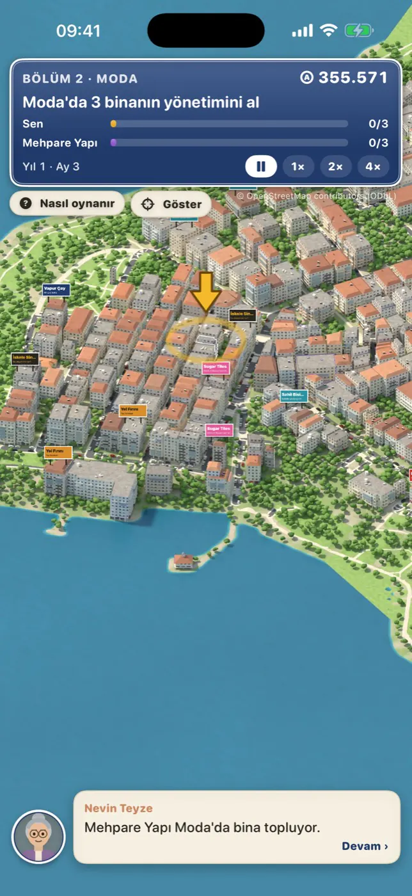
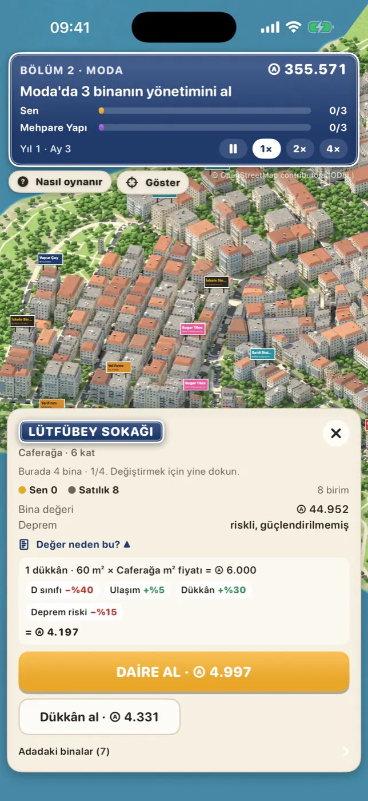
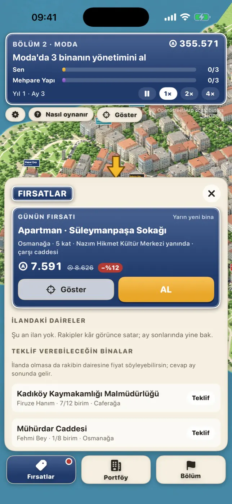
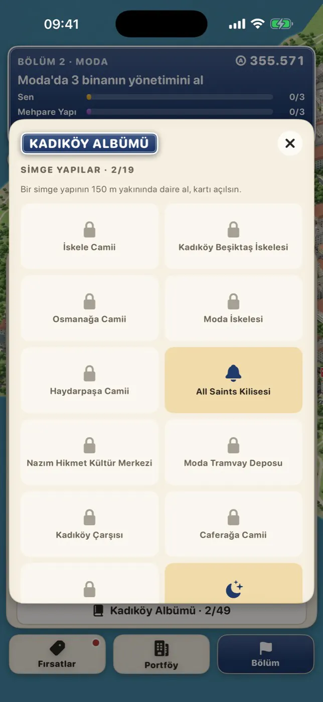
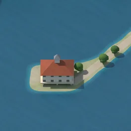

Emlak Kralıİstanbul
Kadıköy'deki her bina gerçek ve satılık.
Emlak Kralı, veriden çizilmiş izometrik bir İstanbul'da geçen bir emlak oyunu. Kadıköy'ün 4.871 binası OpenStreetMap verisinden kendi 3B modelimizle çizildi. Babaannenin dairesiyle başla; al, yenile, kiraya ver, binanın yönetimini kap, rakip yatırımcıları geç.
- Bina bina
- Daire ve dükkânları tek tek al; yarıdan fazlası seninse yönetim sende, aidat sana akar; eski binaları güçlendir.
- Kariyer
- Beş bölüm, üç rakip, sonra Kadıköy Kariyeri'nin unvanları. Çevrimdışı, duraklatılabilir.
- Canlı Kadıköy
- Her pazartesi yeni dünya, en çok 60 oyuncu, iki saatte bir oyun ayı, 14 günlük sezon.
- Her hafta
- Haftalık Yarış ve Haydarpaşa'dan Fenerbahçe'ye altı lig; Kadıköy Albümü; Game Center başarıları.
- Adil
- Ücretsiz. Oyunda avantaj satılmaz, enerji yok, üçüncü taraf reklam yok. İsteğe bağlı pano kiralama oyun gücü vermez.





Harita verisi © OpenStreetMap contributors, ODbL. Emlak Kralı bir Hawk & Mason Studios oyunudur.
Estate KingIstanbul
Every building in Kadıköy is real, and for sale.
Estate King is a real-estate game set in an isometric Istanbul drawn from data. Kadıköy's 4,871 buildings are rendered from OpenStreetMap data with our own 3D model. Start with your grandmother's flat; buy, renovate, rent out, take over the building and outpace rival investors.
- Building by building
- Buy flats and shops one at a time; own more than half and you manage it, service fees flow to you; retrofit old buildings.
- Career
- Five chapters, three rivals, then the titles of the Kadıköy Career. Offline, pausable.
- Live Kadıköy
- A new world every Monday, up to 60 players, a game month every two hours, 14-day seasons.
- Every week
- The Weekly Race and six leagues from Haydarpaşa to Fenerbahçe; the Kadıköy Album; Game Center achievements.
- Fair
- Free. No gameplay advantage is sold, no energy timers, no third-party ads. Optional billboard rental gives no power in the game.
Map data © OpenStreetMap contributors, ODbL. Estate King is a Hawk & Mason Studios game.